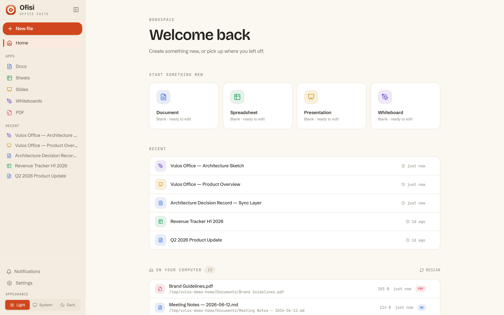

Ofisi
A real, self-hostable collaborative office suite you own.
Documents, spreadsheets, slides, and whiteboards in one clean, modern web app — shipped as a single Go binary with the entire frontend embedded. Real-time co-editing is peer-to-peer and CRDT-native: there is no central document server. Your files live in your own storage. What you run is what you own.

One suite, every surface
Documents-only by design — Docs, Sheets, Slides, Whiteboards, and PDF signing. Chat, video, and mail are deliberately not part of it.
Documents
Rich-text editing (TipTap) — headings, tables, inline images, footnotes, task lists, links. Anchored comments, suggestions (track-changes with accept/reject), version history with restore, find/replace, live outline and word count.
Spreadsheets
A full grid (Fortune Sheet) — formulas, number formats, conditional formatting, data validation, charts, filters, pivot tables, named ranges, and freeze panes.
Slides
A from-scratch positioned-object canvas — free drag/resize/rotate of text, shapes, and images; per-element animations, themes, editable master slides, per-slide transitions, and a presenter view with notes and timer.
Whiteboards
An infinite hand-drawn canvas built on the MIT Excalidraw editor — shapes, arrows, freehand, text, and images. The scene is a Yjs CRDT synced over the same E2E-encrypted P2P engine as Docs.
Real-time co-editing
Always peer-to-peer, no central document server. Edits sync as CRDT updates inside an end-to-end-encrypted room; peers connect directly over WebRTC with a content-blind relay only as a hard-NAT fallback. Share by invite link — the key rides the URL fragment.
PDF import, export & signing
Import and export .docx, .xlsx, .csv, .pptx, Markdown, HTML, and PDF. View, annotate, fill AcroForm fields, and sign PDFs — including multi-party signing envelopes with a cryptographic audit trail.
Quick start
Ofisi runs by itself — no account, no cloud, no external service required. One binary, your storage.
# Docker — one line docker run -d --name ofisi \ -p 8080:8080 \ -v ofisi-data:/srv/data \ ghcr.io/vul-os/ofisi:latest # or build the single binary from source git clone https://github.com/vul-os/ofisi.git cd ofisi npm install && npm run build ./vulos-office
- 1Run itDocker one-liner, or build from source with Go 1.25+ and Node 18+. No database server, no cloud, nothing to sign up for.
- 2Open the appHead to
http://localhost:8080. Single-user with local storage by default; data lives in./dataand./uploads— the whole app, in one file. - 3Own itOptionally turn on auth, PostgreSQL, or an S3-compatible store. Nothing is hosted for you unless you choose it.
Collaboration without a middleman
Real-time co-editing that no server can read. Peers converge with no authority in the middle — because edits are conflict-free (CRDTs), and the room key never leaves your browser.
No central document server
Docs and whiteboards sync as Yjs updates; Sheets and Slides use LWW/tree CRDTs. Peers connect directly over WebRTC. The only server role is content-blind peer discovery — it learns that peers share a random room id, never any content.
End-to-end encrypted rooms
Every session runs inside an E2E-encrypted room whose key never reaches any server. Share by invite link — the key rides the URL fragment. A content-blind relay steps in only as a hard-NAT fallback.
Carries the open-office torch
Ofisi carries the torch lit by LibreOffice and OpenOffice into the browser — free, open, and community-driven — on a fast React frontend and a lightweight Go backend. Open formats in and out, MIT-licensed, no lock-in.
Part of Vulos
Vulos is a family of open, self-hostable apps. Ofisi is a fully standalone product — it never requires Vulos infrastructure — but it also installs as a one-click app on a Vulos OS box, where the same binary runs behind the box gateway with scoped storage and single sign-on. Self-hosting it yourself is always the default path, and never second-class.
Explore Vulos →